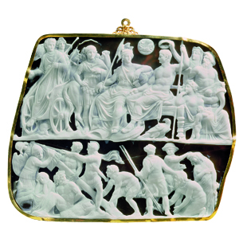

Lezione 4  L'Impero romano
L'Impero romano


ROMA
Il meraviglioso cammeo in onice a due strati detto “Gemma Augustea” è una delle più efficaci rappresentazioni del potere di Augusto, che vediamo al centro della fascia superiore, seduto in trono e affiancato da una personificazione di Roma, a testimoniare il legame della sua figura con i destini della città e dell’Impero. La complessa iconografia della Gemma deriva forse da una poesia di Orazio.
ROMA
Nel 64 d.C. un grosso incendio devasta Roma: l’incertezza delle cause porta i più ad accusare Nerone, principe dispotico e poco amato dalla plebe, che, per difendersi dalle accuse, incolpa la comunità cristiana romana: su di essa scatena una dura repressione.PALESTINA
Nel 6 d.C. la Palestina diventa provincia dell’Impero romano. Sette religiose dividono in quegli anni il popolo di Israele. Inizia, durante il principato di Tiberio, la predicazione di Gesù. Con un messaggio universale, rivolto non solo agli ebrei ma all’umanità intera, il cristianesimo dà vita a un nuovo proselitismo.